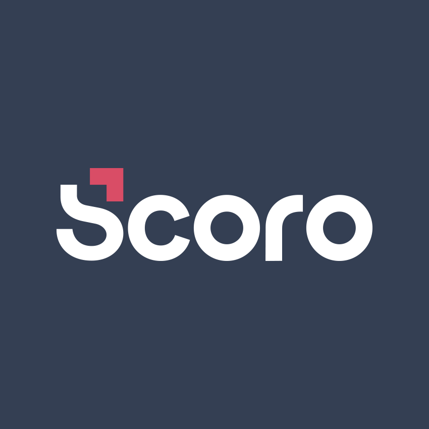
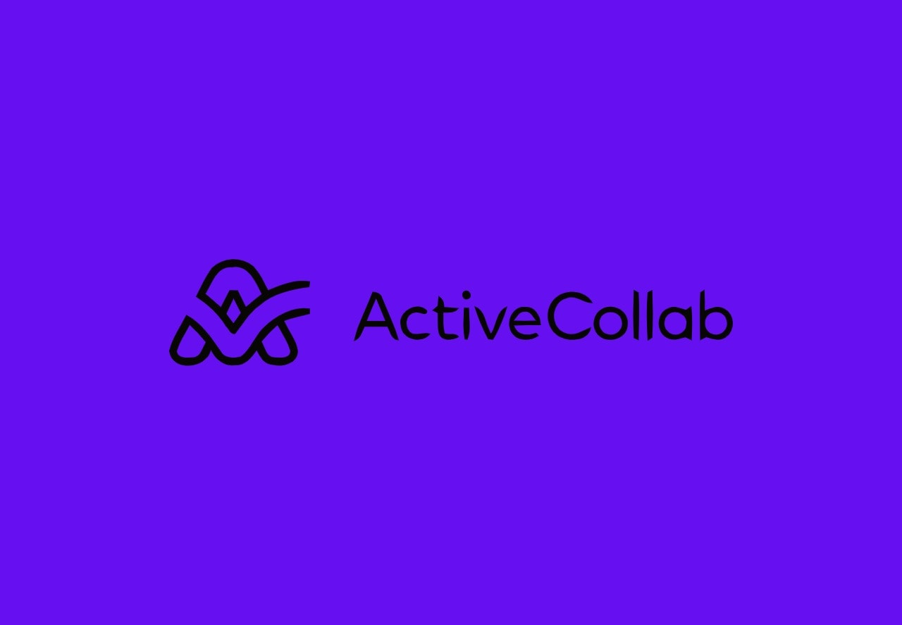
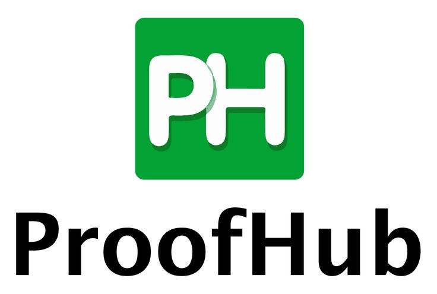
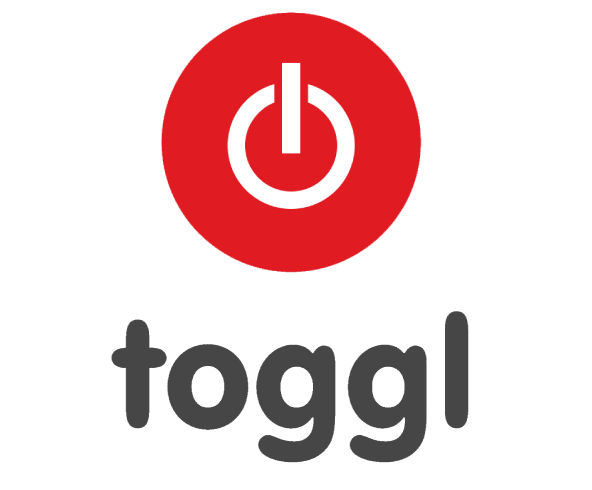

| Scoro | ActiveCollab | ProofHub | Clarizen | Toggl |
|  |  |  |  | |
| Scoro gives you all the tools you need for efficient time management, including time tracking, billing, work reporting, project & task management. | ActiveCollab combines time billing with project management, making it easier to plan and track creative projects. Moreover, this tool provides features for team collaboration and real-time communication. | ProofHub is a versatile project management system used by leading organizations like NASA, Disney, Taco Bell and many more. This all-in-one tool comes packed with powerful features to eliminate the need of having too many tools to run your business. | Clarizen‘s cloud-based project management software has a single goal: to help move your business forward. | Toggl is a no-hassle time tracking software that integrates with tens of different project management systems. It is the perfect add-on to your existing tools, helping you to be more productive throughout the day. |
Links: https://www.scoro.com/blog/best-time-management-tools-reviewed/